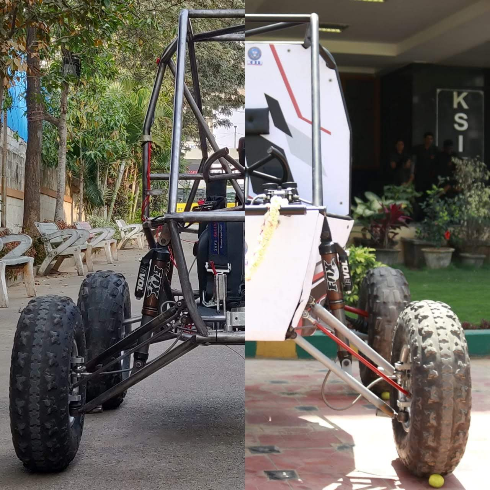
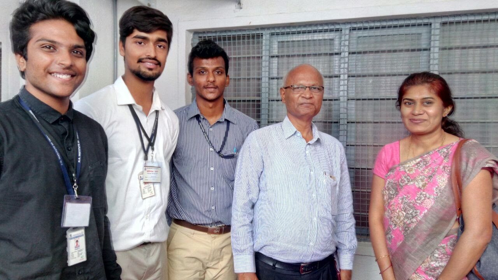
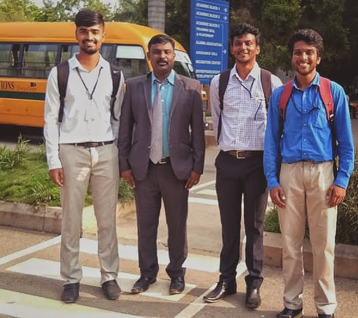

| Chassis Architecture | Tubular Spaceframe fabricated from AISI 4130 Seamless Chromoly (Normalized) Tubing |
|---|---|
| Structural FEA (ANSYS) | Front impact (4G deceleration), Rear impact (4G), Side impact (2G), Rollover load (1.5G); Factor of Safety > 2.15 |
| Powertrain | 305cc Briggs & Stratton Vanguard 4-Stroke OHV Single Cylinder Engine (10 HP @ 3,800 RPM, 19.5 Nm Torque) |
| Transmission | Custom-tuned Gaged / CVTech Continuously Variable Transmission (CVT) paired with 2-stage spur gear reduction box |
| Front Suspension | Independent Double A-Arm (Wishbone) with gas-charged coilover dampers; 8.5 inches wheel travel |
| Rear Suspension | Multi-link Semi-Trailing Arm geometry designed to mitigate bump steer and maximize traction over ruts |
| Braking System | Dual independent hydraulic circuits with Wilwood tandem master cylinders; 4-wheel ventilated floating rotors |
| Curb Mass | 178 kg (wet, without driver) with 42:58 rear-biased weight distribution for superior hill climb capability |
Race Paddock & Workshop Telemetry





1. Chassis Design & Finite Element Analysis (FEA)
The vehicle spaceframe was engineered from scratch according to strict SAE International safety rulebooks. AISI 4130 seamless tubing was chosen for its optimal strength-to-weight ratio and fatigue life under intense cyclic vibration. Triangulated nodes were strategically placed along the primary roll hoop, front roll hoop, and lateral diagonals to establish a rigid protective survival envelope.
Using ANSYS Mechanical, non-linear dynamic impact simulations were executed across front, side, rear, and rollover impact vectors. Stress concentrations near engine mounting lugs and suspension hardpoints were mitigated through gusset reinforcements, maintaining maximum von Mises stress safely below the yield limit while keeping total chassis weight under 42 kg.
2. Suspension Geometry & Kinematic Optimization
To maintain tire contact patch compliance across rock crawling and mud endurance courses, suspension hardpoints were tuned via kinematic simulation. Front roll center height was optimized to minimize roll angles during high-speed cornering without requiring heavy anti-roll bars. Ackermann steering geometry was mapped to eliminate low-speed scrubbing in tight hairpins.
3. Powertrain & CVT Calibration
The Continuously Variable Transmission (CVT) was custom-weighted with tuned flyweights, secondary spring preloads, and helix angles. This kept the Briggs & Stratton engine operating directly within its peak torque plateau (2,600–3,200 RPM) whether crawling vertical gradients or accelerating down straightaways.